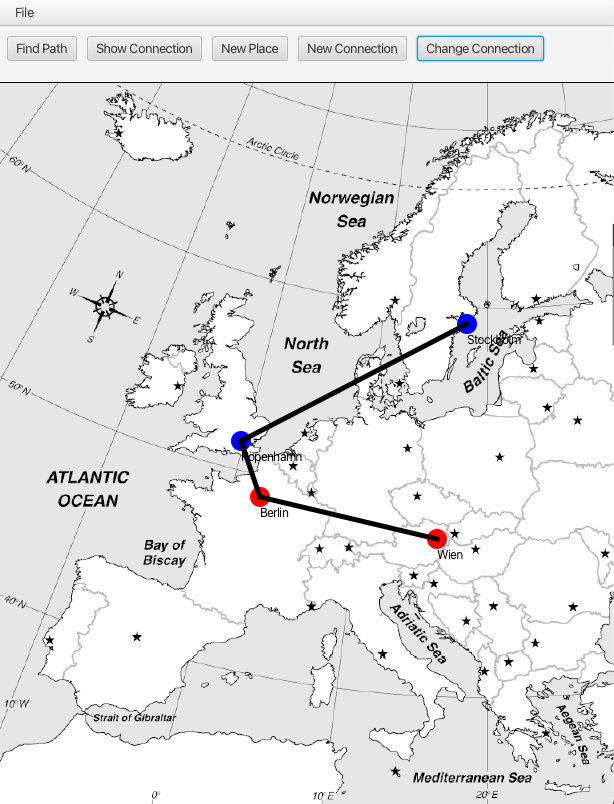

Pathfinder
Github: https://github.com/malinanita/Plantshop
Technologies: Java, JavaFX
Project Description:
A desktop application that lets users add places on a map, create connections between them, and find paths using a implementation of a graph data structure. Built with object-oriented design, the program supports file saving/loading and features a user-friendly JavaFX interface.
